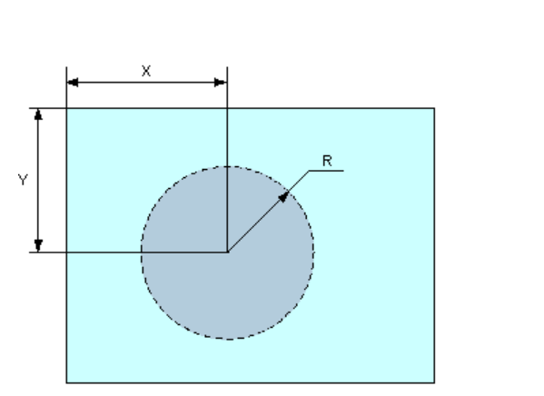

Разобраться как работает тег <AREA>, разработать страничку для демонстрации его возможностей.
| да | да | да | да | да |
Тег <area> (от англ. area - область) определяет активные области изображения, которые являются
ссылками.
Рисунок (картинка, фотография) с привязанными к нему активными областями называют в совокупности картой-изображением или
навигационной
картой.
Такая карта по внешнему виду ничем не отличается от обычного изображения, но при этом оно может быть разбито
на
невидимые зоны разной формы, где каждая из областей служит ссылкой.
Представьте, у нас на сайте есть изображение, и у вас появилась потребность сделать часть этого изображения ссылкой. Это может быть и прямоугольник, и круг, и многоугольник. В этом вам помогут навигационные карты. Ссылка может быть как на HTML-документ, так и на любой другой формат файла.
Элемент <area> задаёт форму области, её размеры, устанавливает адрес документа, на который следует сделать ссылку. Тег <area> всегда располагается в контейнере <map>, который связывает координаты областей с изображением. Несколько областей могут перекрывать друг друга, сверху будет та, которая в коде HTML располагается выше. Закрывающий тег не требуется.
Сначала идет обычное изображение, добавляется атрибут usemap, потом идет символ «#» и далее – название нашей карты. Затем открывающий тег <map>, атрибут name, значение атрибута name – значение нашей карты. Далее следует тег <area>, который имеет атрибуты:

Последним тегом будет </map>, который закрывает нашу карту.
Для примера возьмем картинку из статьи на портала www.autonews.ru:
и разобъем на невидимые зоны (круглые и квадратные формы), где каждая из областей будет служить ссылкой. Пример моего кода:
Теперь посмотрим, что у нас получилось:
Мультимедийный монитор автомобиля с сенсорным экраном. Убедимся в этом, кликнув 👆 на иконки.
Думаю, что рисунок, картинка, фотография — являющаяся картой-изображением (навигационной картой), должна быть размещена на HTML странице в строго указанном размере (px). Без свойств резинового эфекта (возможности маштабирования).
Потому как предустановленные на нее координаты будут терятся (сдвигаться).